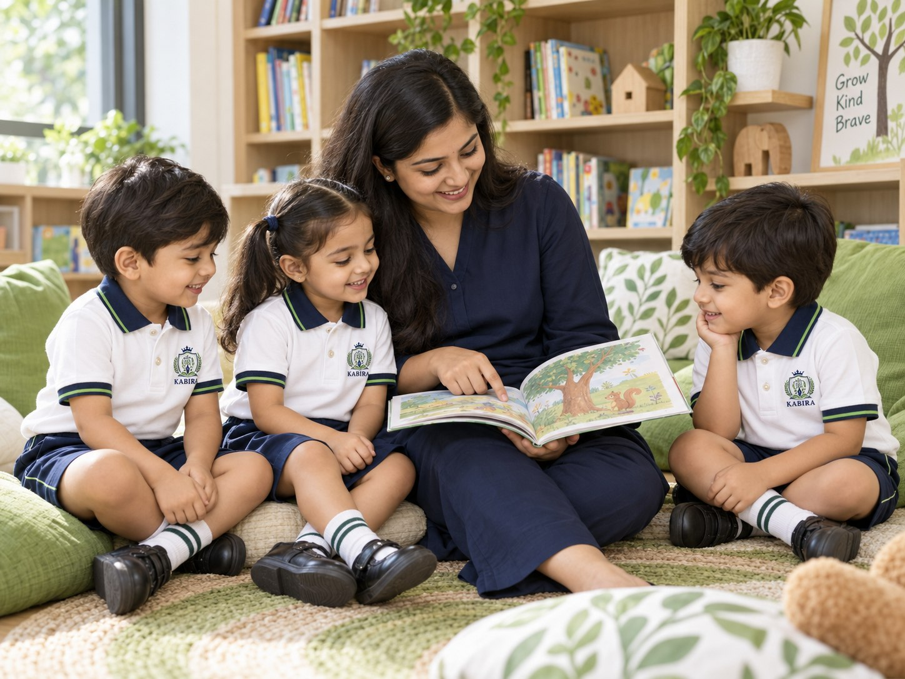
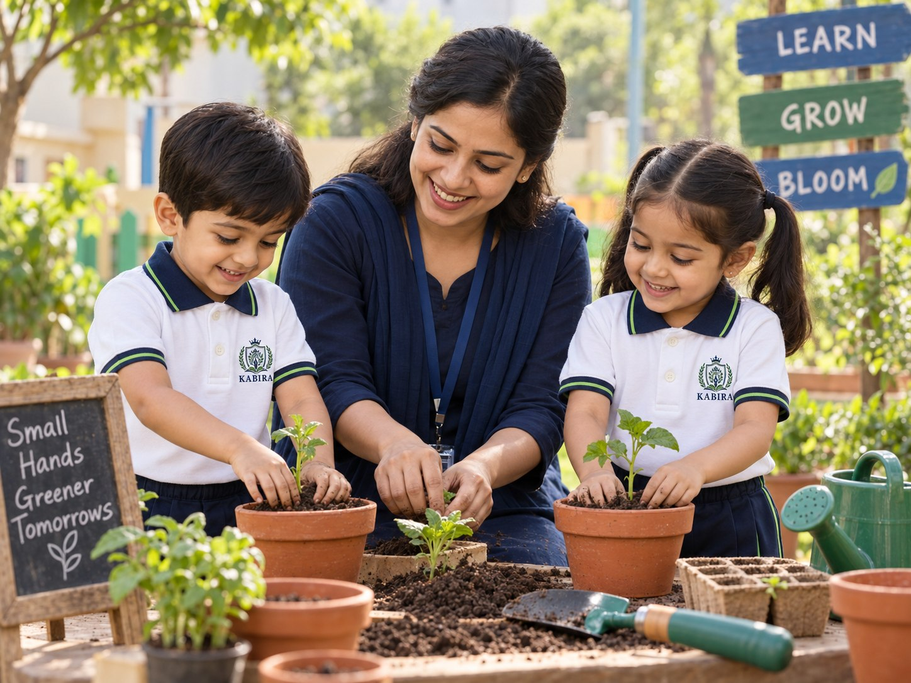
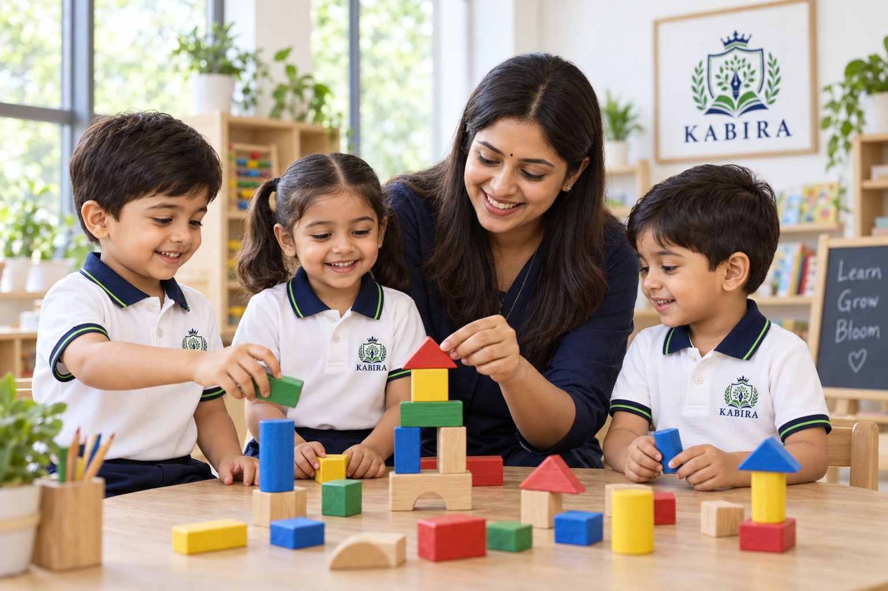

THE RIGHT BEGINNING FOR YOUR CHILD
Every age.
A new discovery.
Four stages, one steady journey. Find your child's age below, then explore that programme's own page for a closer look at what they'll do and develop.
- Pre-Nursery — 2+ years
- Nursery — 3+ years
- LKG — 4+ years
- UKG — 5+ years

PRE-NURSERY · 2+ YEARS
Their first little world of learning.
A gentle introduction to school, where feeling comfortable comes first — through stories, sensory play and first friendships.
Explore Pre-Nursery
NURSERY · 3+ YEARS
Curiosity takes root.
As children become more expressive, they make connections through hands-on learning, conversation and creative activity.
Explore Nursery
LKG · 4+ YEARS
Confidence in every new step.
A play-based approach strengthens academic readiness while preserving the joy of discovery.
Explore LKGUKG · 5+ YEARS
Ready for their next chapter.
Children build the foundations for a confident transition into primary school, balancing academics, creativity and independence.
Explore UKGNEED CARE BEYOND SCHOOL HOURS?
Daycare, for
working families.
Daycare runs alongside any of our programmes, from 8:30 AM to 6:30 PM.